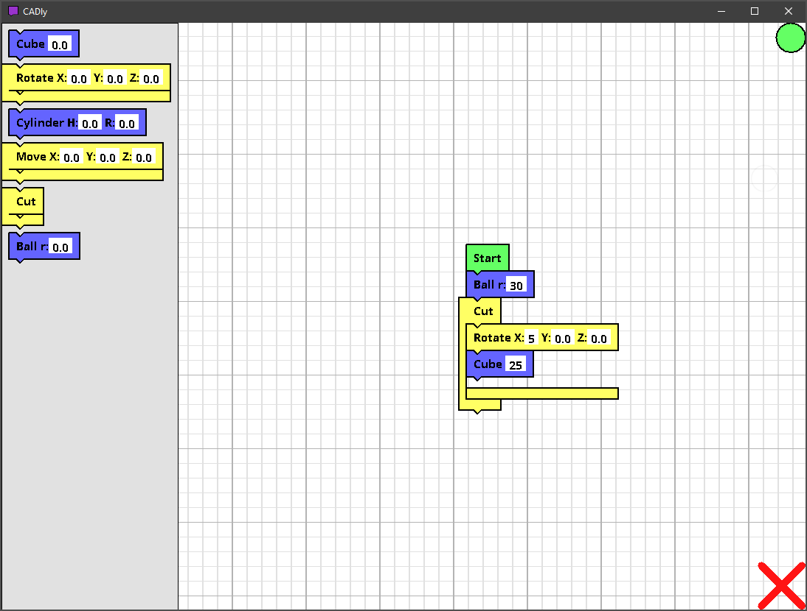

This project is hosted on GitHub with pride.
CADly is open-source and available on GitHub. This means anyone can change it, make it their own, and make it fir their specific requirements.

CADly opens the realm of programmable CAD to the world of K-12
This software was created to share 3D modeling with the world. To encourage kids to experiment with technology and to create the future.
Processing, a versatile multi-platform language, makes it easy to create and change code for almost any task. From Arduino interfaces to artistic programs, Processing has you covered.
CADly is available on the three main operating systems.
Windows
This is for Windows systems.
Hack Upstate is a central New York 24-hour hackathon. It's held at The Tech Garden in Syracuse, NY.